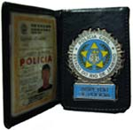

Boa notícia para quem quer entrar para os quadros da Polícia Civil do Rio de Janeiro. Segundo a nova diretora da ACADEPOL, a Dra. Jéssica, esse ano ainda devem sair os editais do concurso para Inspetor de Polícia, Perito Legista e Piloto Policial.
Seriam 600 vagas para Inspetor de Polícia. Além disso, há previsão de se passar a manter um cadastro de reserva para preencher vagas com os aprovados não classificados num primeiro momento, o que deixaria a vida dos excedentes dos concursos bem menos perturbada.

A notícia vem do jornal O Dia, em entrevista concedida pela delegada. Não custa lembrar, a quem pretenda alcançar algum resultado: estude desde já, não espere sair o edital. Veja as provas dos concursos passados. No aguardo!